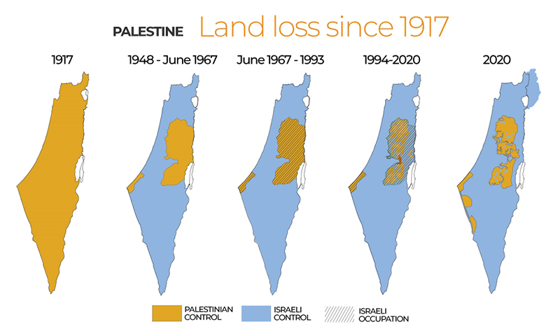
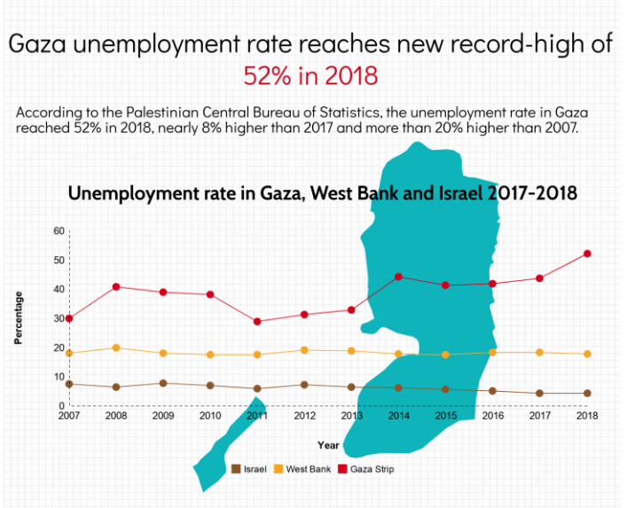

القضية في جوهرها قضية حق وذاكرة وعدالة دولية
بوابة القراءة
واجهة بحثية أوضح، وفهرس يقودك بين التاريخ والقانون والبعد الإنساني
هذه النسخة المطوّرة تجعل التنقل بين المحاور أكثر سلاسة، وتضع مفاتيح المقال الرئيسية في مقدمة المشهد حتى تبقى القراءة مركزة ومريحة بصريًا.
المسار
من التعريف والجذور إلى التحليل ثم المقترحات الختامية.
التركيز
قراءة سياسية وحقوقية وإنسانية مدعومة بصور ومراجع مباشرة.
التنقل
ابحث داخل النص أو استخدم الفهرس للوصول لأي محور خلال ثوانٍ.
منصة التوسع
طبقة بحثية أكبر تجمع القراءة والمسارات والأدلة في مكان واحد
هنا يصبح الموقع أكثر ضخامة وفعالية: مسارات قراءة موجّهة، لوحة تركيز حيّة، بطاقات موجز سريعة، خريطة أدلة للمراجع، وأدوات جاهزة للعرض أو المراجعة السريعة.
المسارات الموجهة
اختر طريقة الدخول إلى البحث
كل مسار يعيد ترتيب القراءة عمليًا وفق زاوية محددة بدل التصفح الخطي فقط.
التركيز الحالي
لوحة المحور الجاري
ملخص مباشر للمحور الذي تقرأه الآن مع انتقال سريع إلى السابق واللاحق.
تعريف القضية
تعتبر القضية الفلسطينية واحدة من أبرز وأطول النزاعات في العصر الحديث. تدور القضية بشكل أساسي حول حق الشعب الفلسطيني في تقرير مصيره، وعودة اللاجئين إلى ديارهم، والمطالبة بإنهاء السيطرة العسكرية الإسرائيلية على الأراضي الفلسطينية. ومن خلال قر...
بطاقات الموجز
موجز سريع لكل محور
واجهة مختصرة تسمح لك بمراجعة المقال كاملًا على شكل بطاقات انتقالية جاهزة.
خريطة الأدلة
ما نوع المصادر التي يستند إليها البحث؟
ملخص حي لأنواع الأدلة الموجودة داخل المكتبة المرجعية، مع أحدث المصادر المعروضة.
2
قانونية وأممية
محاكم دولية، قرارات، ومؤسسات أممية.
5
حقوقية وإنسانية
تقارير توثيقية وبيانات ميدانية.
3
تاريخية وأكاديمية
جذور القضية وسياقها الممتد.
3
سياقية وسياسية
قراءات للشخصيات والتحولات والصراع.
2
اقتصادية وتنموية
الحصار، العمل، وسبل العيش.
7
مصادر حديثة
عدد المراجع الصادرة منذ 2024.
Yahya Sinwar.2026 • السياقي
Application of the Convention on the Prevention and Punishment of the Crime of Genocide in the Gaza Strip (South Africa v. Israel).2024 • القانوني
Containing the Gaza Conflagration.2024 • السياقي
About UNRWA: Fact Sheet.2024 • الإنساني
أدوات العرض
جاهز للمراجعة أو العرض الشفهي
انسخ مخططًا زمنيًا أو نقاط عرض أو خريطة أدلة مباشرة من داخل الصفحة.
الجزء الأول: اختيار القضية وتبريرها
تعريف القضية الفلسطينية
تعتبر القضية الفلسطينية واحدة من أبرز وأطول النزاعات في العصر الحديث. تدور القضية بشكل أساسي حول حق الشعب الفلسطيني في تقرير مصيره، وعودة اللاجئين إلى ديارهم، والمطالبة بإنهاء السيطرة العسكرية الإسرائيلية على الأراضي الفلسطينية. ومن خلال قراءتي لهذه القضية، يتضح أنها ليست مجرد نزاع على حدود جغرافية، بل هي قضية حقوق إنسان وقانون دولي بالدرجة الأولى (Pappé, 2006).

الشكل (1): خريطة تاريخية توضح التحولات الجغرافية في فلسطين
Source: Visualizing Palestine / Historical Archives
سبب اختيار القضية
اخترت هذه القضية تحديداً لأنها تمثل تحدياً حقيقياً لمفهوم "المواطنة العالمية" الذي ندرسه. فعندما نرى استمرار هذه الأزمة لعقود، ندرك وجود تباين في تطبيق مبادئ العدالة الدولية وحقوق الإنسان. هذا التباين يجعل من دراسة القضية الفلسطينية أمراً مهماً لفهم كيف يتعامل المجتمع الدولي مع الأزمات الإنسانية والسياسية المعقدة.
الأسباب التاريخية والسياسية لنشوء القضية
يمكن تلخيص الأسباب التي أدت إلى ظهور هذه القضية واستمرارها في عدة نقاط رئيسية:
- فترة الانتداب ووعد بلفور: يرى المؤرخون أن التدخلات البريطانية في بداية القرن العشرين، وخاصة وعد بلفور (1917)، ساهمت في تغيير الواقع الديموغرافي والسياسي في فلسطين بشكل يتجاهل حقوق سكانها الأصليين (Khalidi, 2020).
- أحداث 1948 (النكبة): نتج عن إعلان قيام دولة إسرائيل وحرب 1948 تهجير مئات الآلاف من الفلسطينيين، مما خلق أزمة لاجئين مستمرة حتى يومنا هذا، وتعد من أكبر القضايا التي تتابعها الأمم المتحدة (UNRWA, 2024).
- التوسع في بناء المستوطنات: الاستمرار في بناء المستوطنات في الأراضي المحتلة عام 1967 يعتبر، بحسب العديد من القرارات الأممية، عقبة رئيسية أمام أي حل سياسي.
- الحصار الاقتصادي: القيود المفروضة على حركة الأفراد والبضائع في قطاع غزة منذ عام 2007 أدت إلى أزمة اقتصادية وإنسانية خانقة أثرت على حياة ملايين المدنيين (World Bank, 2024).
الشكل (2): أوضاع اللاجئين الفلسطينيين إبان النكبة
Source: UNRWA Archives
تداعيات القضية على حقوق الإنسان والمواطنة
1. الجانب الحقوقي:
أشارت تقارير حديثة لمنظمات حقوقية معروفة، مثل هيومن رايتس ووتش ومنظمة العفو الدولية، إلى أن السياسات المتبعة ضد الفلسطينيين تتضمن ممارسات تمييزية واسعة النطاق. وقد وصفت بعض هذه التقارير تلك السياسات بأنها ترقى قانونياً إلى مستوى "الفصل العنصري"، وهو ما يطرح تساؤلات مهمة حول دور المجتمع الدولي في حماية حقوق الإنسان (Amnesty International, 2022).
2. الجانب الاجتماعي والاقتصادي:
من الواضح أن القيود الأمنية والاقتصادية تعيق بشكل كبير تحقيق التنمية المستدامة في الأراضي الفلسطينية. وقد بينت تقارير البنك الدولي كيف أدت هذه الظروف إلى ارتفاع نسب البطالة والفقر، مما يصعب على الأفراد الحصول على أبسط حقوقهم في العيش الكريم وتطوير مجتمعهم.

الشكل (3): مؤشرات اقتصادية للوضع في الأراضي الفلسطينية
Source: World Bank Data
التأثير العالمي للقضية
لم تعد القضية محصورة في الجانب الإقليمي، بل امتد تأثيرها ليشمل:
- الجانب القانوني الدولي: أصبحت المؤسسات مثل محكمة العدل الدولية (ICJ) مسرحاً لمناقشة تداعيات الصراع، كما حدث في الدعوى التي رفعتها جنوب إفريقيا لطلب تدابير مؤقتة. هذا يضع المنظومة القانونية الدولية أمام اختبار حقيقي لمدى التزامها بتطبيق القانون على الجميع (ICJ, 2024).
- التفاعل المجتمعي العالمي: لاحظنا في السنوات الأخيرة زيادة ملحوظة في وعي المجتمعات العالمية بالقضية، وبرز ذلك من خلال الاحتجاجات في الجامعات الغربية وحركات المقاطعة السلمية.
الشكل (4): جلسة لمجلس الأمن الدولي
Source: UN Photo
الجزء الثاني: يحيى السنوار وعلاقته بمسار القضية
نبذة عن الشخصية
يحيى السنوار (1962 - 2024) كان شخصية سياسية وعسكرية بارزة في الساحة الفلسطينية، وشغل منصب رئيس المكتب السياسي لحركة حماس. ولد السنوار في مخيم خان يونس للاجئين، وقضى أكثر من 22 عاماً في السجون الإسرائيلية قبل أن يخرج في صفقة تبادل عام 2011. دراسته الطويلة للمجتمع والسياسة الإسرائيلية خلال فترة سجنه أثرت بشكل كبير على طريقة تفكيره وإدارته للصراع لاحقاً (Britannica, 2026).
الشكل (5): صورة أرشيفية ليحيى السنوار
Source: Wikimedia Commons
طبيعة اهتمامه بالقضية
لم يكن السنوار مجرد مراقب سياسي، بل كان نتاجاً مباشراً لبيئة اللجوء والاحتلال. يرى بعض المحللين أن نهجه اعتمد على فكرة أساسية وهي أن التفاوض السلمي وحده لم يعد قادراً على تحقيق نتائج ملموسة بعد سنوات طويلة من التعثر، وأن لفت انتباه العالم إلى معاناة الفلسطينيين يتطلب استخدام أوراق ضغط ميدانية قوية ومحاولة تغيير الواقع الميداني (Roy, 2011).
مواقف وأحداث ميدانية مرتبطة بالشخصية
1. دعم الاحتجاجات الشعبية (مسيرات العودة 2018):
في عام 2018، دعمت القيادة في غزة مسيرات شعبية واسعة نحو الحدود للمطالبة بفك الحصار. ورغم التكلفة البشرية العالية، يمكن تفسير هذا التحرك بأنه كان محاولة لإعادة القضية إلى الواجهة الإعلامية والدبلوماسية وتسليط الضوء على الأزمة الإنسانية الخانقة (UNRWA, 2019).
الشكل (6): مشهد ميداني من الاحتجاجات في قطاع غزة
Source: Middle East Monitor
2. ربط الجبهات الجغرافية (2021):
من أبرز التحولات التي قادها السنوار كانت محاولة دمج الساحات الفلسطينية المختلفة. ففي عام 2021، ردت الفصائل في غزة عسكرياً على التوترات التي حدثت في مدينة القدس (حي الشيخ جراح).
3. التطورات الأمنية في 7 أكتوبر (2023):
أدت التكتيكات والهجوم المفاجئ الذي حدث في السابع من أكتوبر إلى إحداث صدمة كبيرة. ومن منظور التحليل السياسي، أدت هذه التطورات إلى تعطيل بعض مسارات التطبيع الإقليمي التي كانت تتجاوز الملف الفلسطيني (International Crisis Group, 2024).
تحليل أثر الشخصية في تطورات القضية
- إعادة الاهتمام الدولي: من خلال التصعيد العسكري والسياسي، أسهمت سياساته في دفع الدول الفاعلة إلى إعادة إدراج الملف الفلسطيني كأولوية على طاولات النقاش الدبلوماسي.
- تطوير القدرات التنظيمية: على الرغم من الحصار المشدد، عملت الحركة تحت قيادته على تطوير قدرات ذاتية مكنتها من الصمود والمواجهة لفترات طويلة.
- التأثير على التصورات السياسية: يتضح من خلال متابعة الأحداث أن نهجه وجه رسالة واضحة مفادها أن الاستمرار في سياسة احتواء النزاع بدلاً من حله سيؤدي دائماً إلى انفجارات متكررة.
الجزء الثالث: حلول ومقترحات قابلة للتنفيذ
1. على مستوى المنظمات والدول:
- ضرورة التزام الدول بقرارات الشرعية الدولية واحترام توصيات محكمة العدل الدولية.
- تقديم دعم مؤسسي ومستدام لوكالات الإغاثة الدولية (مثل الأونروا) لتخفيف حدة الأزمة الإنسانية.
2. على مستوى المؤسسات المدنية:
- تشجيع الجامعات والمؤسسات على مراجعة استثماراتها والتأكد من عدم ارتباطها بشركات تتربح من استمرار الاحتلال.
3. دور الفرد والمواطن العالمي:
- العمل على التثقيف الذاتي ومتابعة المصادر المتعددة لفهم تعقيدات الصراع، والمشاركة في الحوارات التي تعزز قيم العدالة.
الخلاصة والربط بين القضية والشخصية
من خلال إعدادي لهذا التقرير، تعلمت أن الأزمات العالمية الممتدة لا يمكن فهمها بمعزل عن الظروف الإنسانية التي خلقتها. الربط بين القضية الفلسطينية وشخصية يحيى السنوار يقدم مثالاً واضحاً على كيف أن استمرار الحصار وغياب الأفق السياسي يؤديان بشكل طبيعي إلى بروز شخصيات وتيارات تتبنى مسارات حادة في المواجهة.
وبرأيي، فإن الدرس الأهم الذي يمكن استخلاصه هو أن المواطنة العالمية تتطلب منا معالجة الجذور الأساسية للنزاعات (كالاحتلال وانعدام العدالة) بدلاً من محاولة التعامل فقط مع أعراضها. إن تحقيق السلام الدائم لا يمكن أن يُفرض بالقوة، بل من خلال إنفاذ القانون الدولي بمساواة تامة.
قائمة المصادر والمراجع
أعيد تنظيم هذا القسم ليضم مصادر حقيقية وموثقة، موزعة بين مراجع أممية وقانونية وحقوقية وأكاديمية واقتصادية، بحيث تدعم متن البحث بدل أن تبقى قائمة عامة غير مترابطة.
6
أممية وقانونية
الأمم المتحدة، محكمة العدل الدولية، قرارات مجلس الأمن، والأونروا.
3
حقوقية وإنسانية
تقارير موثقة حول أثر السياسات والحرب والحقوق الأساسية.
4
أكاديمية وسياقية
كتب ودراسات لفهم الجذور التاريخية والسياق السياسي والشخصيات.
2
اقتصادية وتنموية
قياس أثر الحرب والحصار على الاقتصاد والعمل وسبل العيش.
لا توجد مراجع مطابقة للفلترة الحالية.
01
Amnesty International. (2022).
Israel’s Apartheid Against Palestinians: Cruel System of Domination and Crime Against Humanity.
حقوقي
تقرير دولي
يدعم المحور الحقوقي في البحث، خاصةً ما يتعلق بالتمييز البنيوي والانتهاكات الممتدة بحق الفلسطينيين.
02
Human Rights Watch. (2021).
A Threshold Crossed: Israeli Authorities and the Crimes of Apartheid and Persecution.
حقوقي
توثيق قانوني
مرجع مهم لفهم اللغة الحقوقية والقانونية المستخدمة عند مناقشة البنية التمييزية وآثارها على الحقوق الأساسية.
03
International Court of Justice (ICJ). (2024).
Application of the Convention on the Prevention and Punishment of the Crime of Genocide in the Gaza Strip (South Africa v. Israel).
قانوني
محكمة دولية
يرتبط مباشرة بالفقرة التي تناقش اختبار القانون الدولي عبر التدابير المؤقتة واللجوء إلى القضاء الدولي.
04
International Crisis Group. (2024).
Containing the Gaza Conflagration.
سياقي
تحليل سياسي
مفيد لقراءة الارتدادات الإقليمية والسياسية للحرب وتبدل الحسابات الدولية والإقليمية بعد 7 أكتوبر.
05
Khalidi, R. (2020).
The Hundred Years' War on Palestine: A History of Settler Colonialism and Resistance, 1917-2017.
تاريخي
أكاديمي
مرجع قوي للجذور التاريخية ووعد بلفور والتحولات البنيوية التي قادت إلى تشكل القضية بصيغتها الحديثة.
06
Encyclopaedia Britannica. (2026).
Yahya Sinwar.
سيرة
شخصية محورية
يوفر خلفية مركزة وموثوقة عن سيرة السنوار ومساره السياسي، بما يخدم الجزء الخاص بالشخصية وسياقها.
07
UNRWA. (2019).
Gaza’s “Great March of Return”: One Year On.
إنساني
ميداني
يدعم الحديث عن مسيرات العودة من زاوية الكلفة البشرية والضغط الإنساني وإعادة جذب الانتباه الدولي إلى غزة.
08
Pappé, I. (2006).
The Ethnic Cleansing of Palestine.
تاريخي
أكاديمي
يوظف في المدخل العام لفهم النكبة والاقتلاع الجماعي بوصفهما جزءًا بنيويًا من نشأة المسألة الفلسطينية.
09
Roy, S. (2011).
Hamas and Civil Society in Gaza: Engaging the Islamist Social Sector.
سياقي
أكاديمي
يفيد في فهم البيئة الاجتماعية والسياسية في غزة، وهو أنسب من المراجع العامة عند ربط الشخصية بالبنية الحركية في القطاع.
10
UNRWA. (2024).
About UNRWA: Fact Sheet.
لاجئون
أممي
يدعم الفقرة المتعلقة باللجوء واستمرار قضية اللاجئين الفلسطينيين ضمن المتابعة الأممية والمؤسساتية.
11
World Bank. (2024).
World Bank Economic Monitoring Report: Impacts of the Conflict in the Middle East on the Palestinian Economy.
اقتصادي
تنموي
يسند الحديث عن الحصار والأثر الاقتصادي وتدهور القدرة على العيش والإنتاج داخل غزة والضفة الغربية.
12
United Nations. (2020).
Origins and Evolution of the Palestine Problem.
أممي
مرجع تأسيسي
مرجع تأسيسي من منظومة الأمم المتحدة يثبّت الخلفية التاريخية الممتدة للقضية من بداياتها حتى تحولاتها الدولية.
13
United Nations Security Council. (2016).
Resolution 2334 (2016): Illegality of Israeli Settlements in Palestinian Territory Occupied Since 1967.
قرار أممي
قانوني
يعزز الإطار القانوني في البحث، خصوصًا ما يتعلق بعدم شرعية الاستيطان وأثره على حل الدولتين والقانون الدولي.
14
International Labour Organization & PCBS. (2024).
A Year of War in Gaza: Impacts on Employment and Livelihoods in the West Bank and Gaza Strip.
اقتصادي
سوق العمل
يربط بين الحرب وسوق العمل وسبل العيش والفقر وتراجع النشاط الاقتصادي، وهو مفيد لتقوية المنظور الاجتماعي الاقتصادي.
15
United Nations OCHA. (2024).
Reported impact snapshot | Gaza Strip (22 October 2024).
إنساني
بيانات ميدانية
يوفر لقطة كمية سريعة عن الخسائر والوضع الإنساني والخدمات، ويمنح القسم الميداني في البحث سندًا رقميًا مباشرًا.